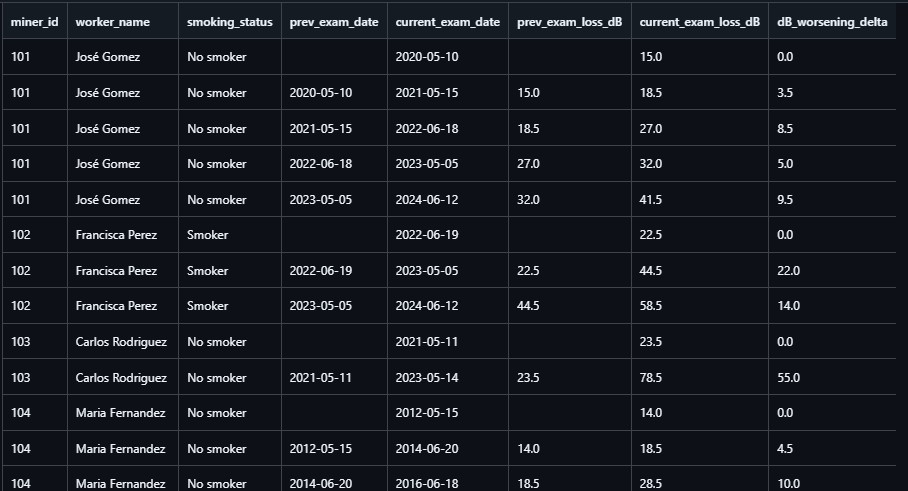

Occupational hearing loss analysis with SQL
Occupational Hearing Loss Analysis in the Mining Industry is an end-to-end data pipeline built in Google BigQuery to track progressive hearing degradation among miners by cross-referencing longitudinal audiometric exams, workplace noise baselines, and lifestyle risk factors like smoking. To ensure clinical precision, the script implements a "Worst Ear" approach that dynamically isolates the highest decibel loss (worst_ear_loss_dB) per session, preventing severe unilateral acoustic trauma from being masked by averages. By leveraging Advanced SQL concepts—including layered CTEs for clean data isolation and Window Functions (LAG) for chronological delta calculations (dB_worsening_delta)—the pipeline eliminates expensive self-joins to deliver high-performance trend analysis. This solution empowers occupational health departments to shift from reactive care to proactive intervention, flagging at-risk workers early and allowing safety managers to optimize PPE and rotation shifts based on data-driven compound risk insights. The entire relational dataset has been mocked using a memory-layered WITH ... UNION ALL architecture, making it ready for instant, one-click execution in BigQuery’s free sandbox tier.